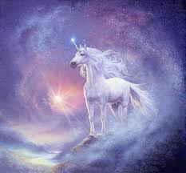
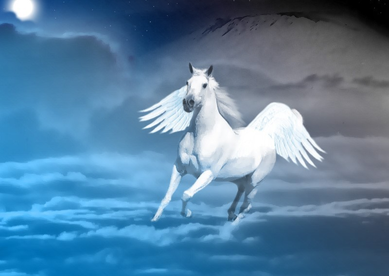
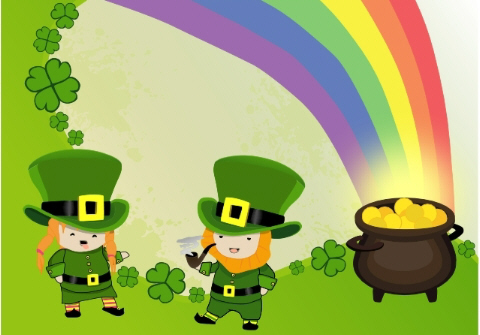
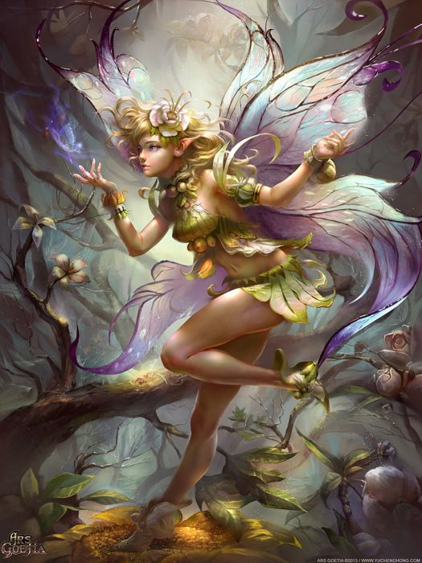
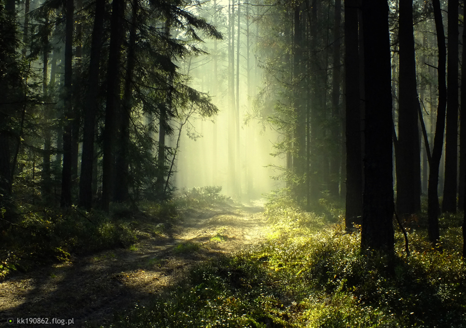

Jednorożec Ostreusz
W heraldyce jednorożec przedstawiany jest jako koń z rozdwojonymi kopytami i brodą, ogonem lwa oraz wydłużonym rogiem na czole[36]. Ze względu na fakt, że to legendarne stworzenie było symbolem Chrystusa – wcielonego Boga – oraz alegorią nieokiełznanych sił natury, motyw ten nie pojawiał się zbyt często we wczesnej heraldyce. Rozprzestrzenił się on dopiero w XVI w.[36] Jednorożec czasem pojawiał się z obrożą na szyi, co oznaczało, iż został okiełznany. Później częściej wykorzystywano motyw z fragmentem łańcucha zwisającego z obroży, na znak, iż stworzenie wyzwoliło się.Najprawdopodobniej najbardziej znane wykorzystanie jednorożca to herb Królestwa Szkocji – dwa te stworzenia pojawiają się tam jako trzymacze heraldyczne. Podobnie jest w herbie Wielkiej Brytanii (gdzie rolę tę wypełniają lew i jednorożec). Król Jakub VI dodał szkockiego jednorożca do tego herbu jako trzymacza w miejsce walijskiego smoka. Jednorożec występuje także w polskim herbie szlacheckim Bończa i jego odmianach, Ankwicz (z nobilitacji galicyjskiej), klejnocie herbu Albiński. Jednorożec jest jednym z elementów herbu gminy Jednorożec jako godło mówiące. Głowa jednorożca widnieje w herbie Lidzbarka i powiatu Działdowskiego, pół jednorożca to jeden z elementów herbu gminy Orońsko i herbu gminy Zgierz.

Pegaz Puszek
Istnieje kilka wersji tego, jak narodził się skrzydlaty ogier Pegaz oraz jego brat Chrysaor. Jedna z nich opowiada, że Pegaz powstał z krwi Meduzy, której to Perseusz odciął głowę[1]. Analogicznie do mitu, w którym Atena narodziła się z głowy Zeusa. Kolejna wersja również informuje o pozbawieniu głowy Meduzy przez Perseusza, jednak tym razem podanie informuje, że skrzydlaci bracia narodzili się z ziemi, karmieni krwią Gorgony. Jedna z wariacji tej historii utrzymuje, że byli uformowani ze zmieszanej krwi Meduzy oraz odrobiny morskiej piany, implikując tym samym rolę Posejdona, jako mającego bardzo duży udział w ich stworzeniu.Pegaz wspierał bohatera imieniem Bellerofont w jego obu walkach przeciwko Chimerom oraz Amazonkom. Istnieją różne opowieści, w których to Bellerofont odnalazł Pegaza. Najbardziej popularna mówi, że Polyeidos powiedział bohaterowi, aby ten zanocował w świątyni Ateny. W nocy odwiedziła go bogini i ofiarowała mu złotą uzdę. O poranku gdy dalej dzierżył uzdę, napotkał Pegaza pijącego wodę z Pieriańskiego źródła. Kiedy koń zobaczył uzdę, zbliżył się do Bellerofonta i pozwolił mu się dosiąść. Bellerofont pokonał Chimerę na grzbiecie Pegaza. Później próbował dolecieć na Pegazie na szczyt góry Olimp, po to by zobaczyć bogów. Jednakże Zeus, niezadowolony z poczynań mitologicznego śmiałka sprawił, że Bellerofont spadł z grzbietu Pegaza i nigdy nie dotarł na szczyt góry[2].

Skrzat Ebenezer
Według folkloru spotkanie leprechauna jest wydarzeniem bardzo rzadkim, i jeśli już, to ma miejsce zwykle w okolicy elfickich fortów, którymi zwykle są drumliny i starodawne fortyfikacje (takie jak szańce). Leprechauny są samotnikami, mieszkającymi w odległych miejscach i zajmują się wyrobem butów. Nazwa leprechaun znaczy dosłownie „szewc”. Jego obecność zdradzają czasem rytmiczne uderzenia jego szewskiego młotka, jeżeli akurat pracuje. Z wyglądu, leprechaun przypomina drobnego, włochatego, starego człowieczka, o pomarszczonej twarzy i wzroście przeważnie nieprzekraczającym trzech stóp (ok. 93 cm). Nosi kapelusz, skórzany fartuch roboczy, wełnianą kamizelkę, krótkie spodnie, długie pończochy i buty ze srebrnymi sprzączkami. Zawsze nosi brodę i zwykle pali fajkę. W opisach z czasów bardziej współczesnych naszym, leprechaun nosi szmaragdowozielony anglez, który jest nieodłącznym elementem jego bardzo kolorowego stroju – źródłem tego jest jednakże jego obraz na płatkach śniadaniowych Lucky Charms, a nie przekazy tradycyjne.Ma zawsze przy sobie dwie sakiewki: jedna zawiera srebrną, a druga złotą monetę. Srebrna moneta służy Leprechaunowi do płacenia za wszelkie potrzebne mu dobra; dzięki swej magicznej mocy zawsze znika z kieszeni sprzedającego i powraca do pierwotnego właściciela. Złota moneta służy mu za łapówkę dla każdego, który go schwyta; po zamianie właściciela zamienia się błyskawicznie w popiół lub w suche liście. Leprechauny znają miejsca, w których zakopane są skarby, jakimi często są gliniane naczynia wypełnione złotem. Jeżeli jeden z nich zostanie złapany to zdradzi to miejsce, ale kosztowności nie odda łatwo, skąd wzięło się powiedzenie, że skarb leprechauna leży „po drugiej stronie tęczy” (czyli jest nie do zdobycia).
Leprechauny są złośliwe z natury, a także kochają celtyckie sporty i muzykę. Uwielbiają płatać wymyślne i dobrze przemyślane figle, na co jest wiele przykładów w folklorze irlandzkim. Na przykład, pewnego razu rolnik złapał leprechauna i zmusił go do wydania miejsca ukrycia skarbu. Leprechaun powiedział mu, że skarb został zakopany pod jednym z rosnących na polu chwastów. Rolnik obwiązał ten chwast czerwoną chustą, wypuścił leprechauna i poszedł po łopatę. Gdy wrócił, wszystkie chwasty na tym polu były obwiązane identycznymi czerwonymi chustami. Mają też skłonność do alkoholu i podkradania ludziom różnych rzeczy.

Wrózka Nilia
W heraldyce jednorożec przedstawiany jest jako koń z rozdwojonymi kopytami i brodą, ogonem lwa oraz wydłużonym rogiem na czole[36]. Ze względu na fakt, że to legendarne stworzenie było symbolem Chrystusa – wcielonego Boga – oraz alegorią nieokiełznanych sił natury, motyw ten nie pojawiał się zbyt często we wczesnej heraldyce. Rozprzestrzenił się on dopiero w XVI w.[36] Jednorożec czasem pojawiał się z obrożą na szyi, co oznaczało, iż został okiełznany. Później częściej wykorzystywano motyw z fragmentem łańcucha zwisającego z obroży, na znak, iż stworzenie wyzwoliło się.Najprawdopodobniej najbardziej znane wykorzystanie jednorożca to herb Królestwa Szkocji – dwa te stworzenia pojawiają się tam jako trzymacze heraldyczne. Podobnie jest w herbie Wielkiej Brytanii (gdzie rolę tę wypełniają lew i jednorożec). Król Jakub VI dodał szkockiego jednorożca do tego herbu jako trzymacza w miejsce walijskiego smoka. Jednorożec występuje także w polskim herbie szlacheckim Bończa i jego odmianach, Ankwicz (z nobilitacji galicyjskiej), klejnocie herbu Albiński. Jednorożec jest jednym z elementów herbu gminy Jednorożec jako godło mówiące. Głowa jednorożca widnieje w herbie Lidzbarka i powiatu Działdowskiego, pół jednorożca to jeden z elementów herbu gminy Orońsko i herbu gminy Zgierz.
A teraz poznaj najważniejsze miejsca na polanie jednorożców..
